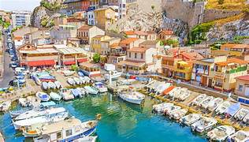
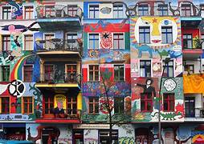
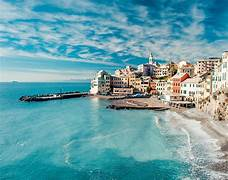
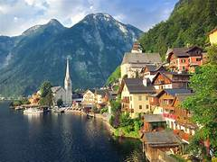
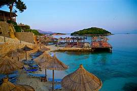
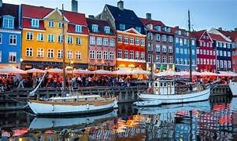
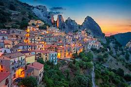
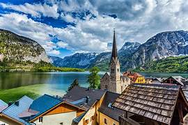

RECOMENDACIONES SOBRE DESTINOS EUROPEOS
Top mejores destinos de Europa






Europa es uno de los 6 continentes del mundo que contiene una superficie de 10 millones de kilómetros cuadrados, formada por 47 países y otros estados como Mónaco, San Marino o el Vaticano.
. Es el segundo continente más pequeño pero uno de los más poblados. Es un continente muy diverso culturalmente donde más de 200 languages son hablados.
Pulse aquí para obtener más información sobre Europa, su historia, su cultura y sus características.
Top 4 ciudades favoritas de los viajeros de este block
ITALIA
| Descripción |
País con capital en Roma. Se caracteriza por tener algunos de los paisajes más paisajes de la Tierra |
| Tiempo |
Clima mediterraneo |
| Comida tipica |
Pasta,pizza,aranzini,lasaña,helado y mas |

AUSTRIA
| Descripción |
Pais situado en en gran parte montañoso. País del centro-sur de Europa con la capital de Viena |
| Tiempo |
Clima atlantico |
| Comida típica |
Sopa Goulash,Kaiserschmarrn,Strudel y mas |

OTROS DESTINOS MUY RECOMENDADOS POR VIAJEROS POR EUROPA.
- Alemania
- Francia
- Malta
- Noruega
- Dinamarca